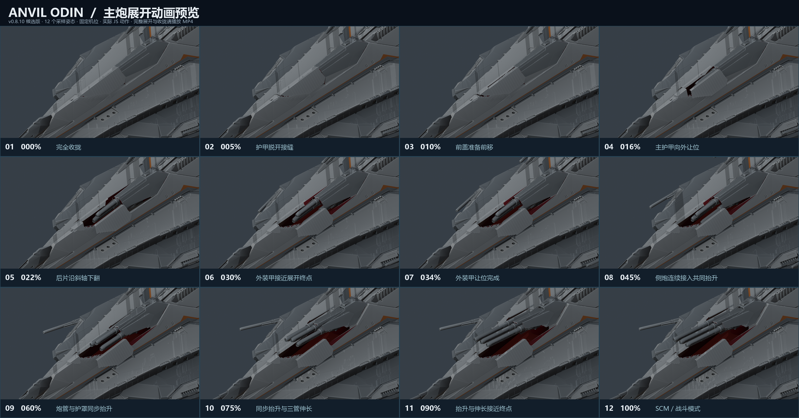
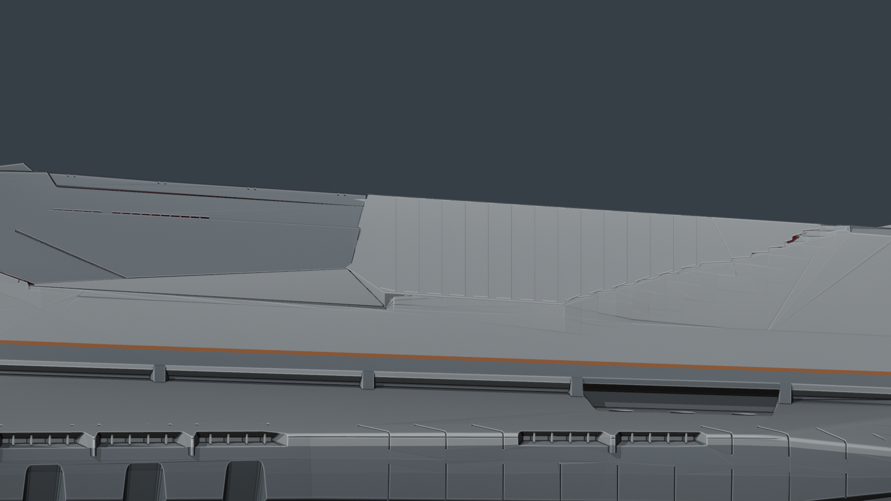
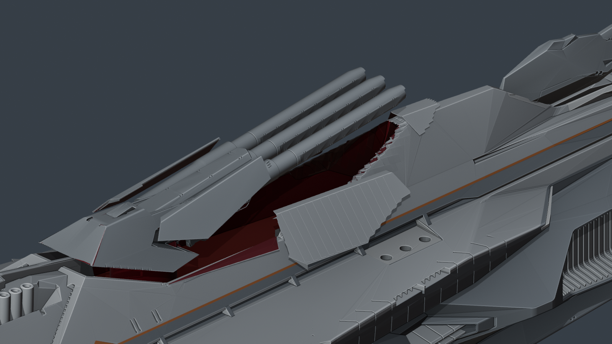
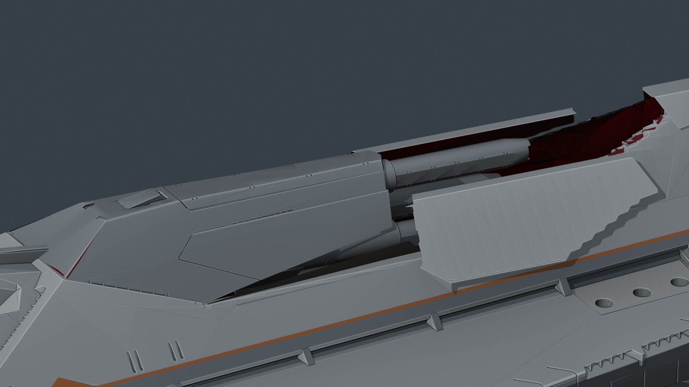

<!doctype html>
<html lang="zh-CN">
<meta charset="utf-8">
<meta name="viewport" content="width=device-width, initial-scale=1">
<title>奥丁主炮 · v0.8.10 动画预览</title>
<style>
*{box-sizing:border-box}body{margin:0;background:#0c1117;color:#e6ebef;font:16px/1.6 system-ui,"Microsoft YaHei",sans-serif}
main{max-width:1328px;margin:auto;padding:28px 24px 56px}h1{font-size:25px;margin:0 0 4px;font-weight:600}
p{color:#a7b2bd;margin:0 0 22px}video,img{width:100%;display:block;border:1px solid #303a43}
nav{display:flex;flex-wrap:wrap;gap:24px;margin:18px 0 30px}a{color:#d6e3ed;text-underline-offset:5px}h2{font-size:19px;font-weight:500;margin:28px 0 12px}
</style>
<main>
<h1>奥丁主炮 · v0.8.10 动画预览</h1>
<p>侧面缺口分别补入活动装甲与固定船体；后盖板沿实际连接边翻转，装甲增加厚度，前部内壁补齐深红色。</p>
<video controls autoplay muted loop playsinline preload="auto" poster="closed.png" src="main-battery-preview.mp4"></video>
<nav><a href="main-battery-preview.mp4">单独播放视频</a><a href="closed.png">查看闭合近景</a><a href="open.png">查看展开近景</a><a href="/">进入舰船展示</a></nav>
<h2>12 张动作序列</h2>
<a href="main-battery-sequence.png"></a>
<h2>侧面接缝</h2><a href="junction-closeup.png"></a><h2>展开后的深红色内壁</h2><h2>后盖板翻转中间态</h2></main>
</html>
